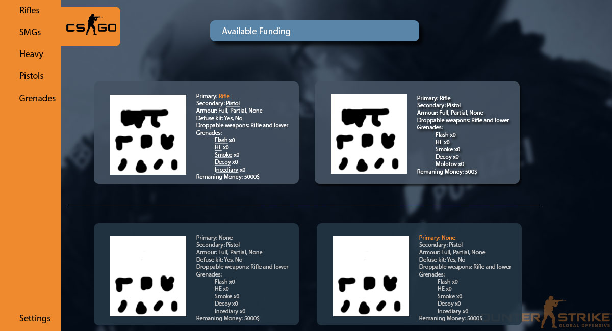
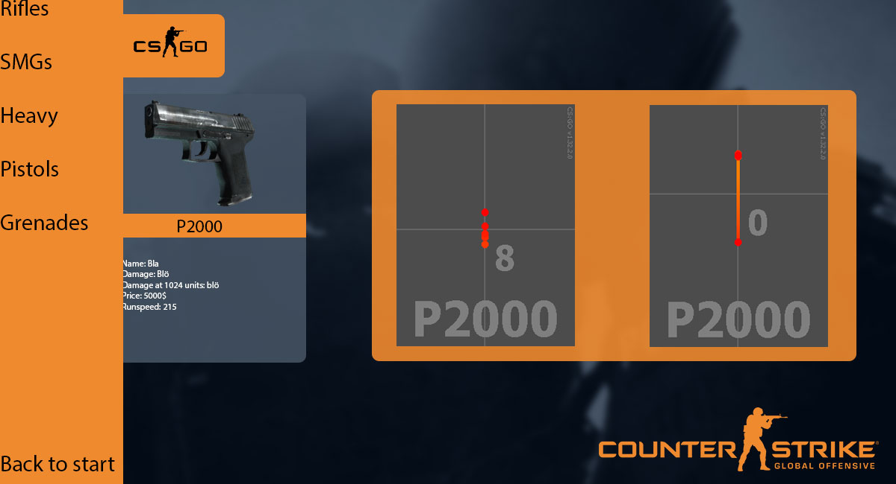

- Vecka 10 - torsdag: Gör planering, påbörja index
- Vecka 11 - onsdag: Jobba på index element och sidomeny
- Vecka 12 - onsdag: Slutför sidomeny
- Vecka 12 - torsdag: Gör minst en undersida
- Vecka 13 - onsdag: Påbörja design på köpblock och knappar
- Vecka 13 - torsdag: Påbörja skript
- Vecka 15 - lov
- Vecka 18 - Hoverfunktion för vapen
- Vecka 19 - Mobilanpassning
- Vecka 20 - Finpolering och buggtesting alt. Vapensidor
- Vecka 20 - Söndag 20:e maj inlämmning
- Vapensidor kan eller bör göras hemma på egen hand

